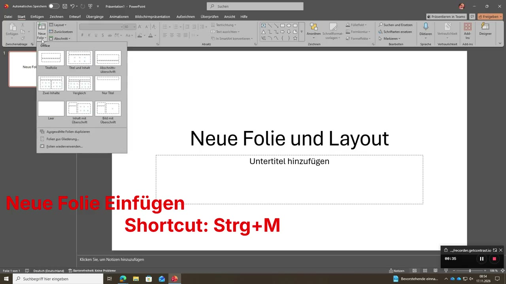
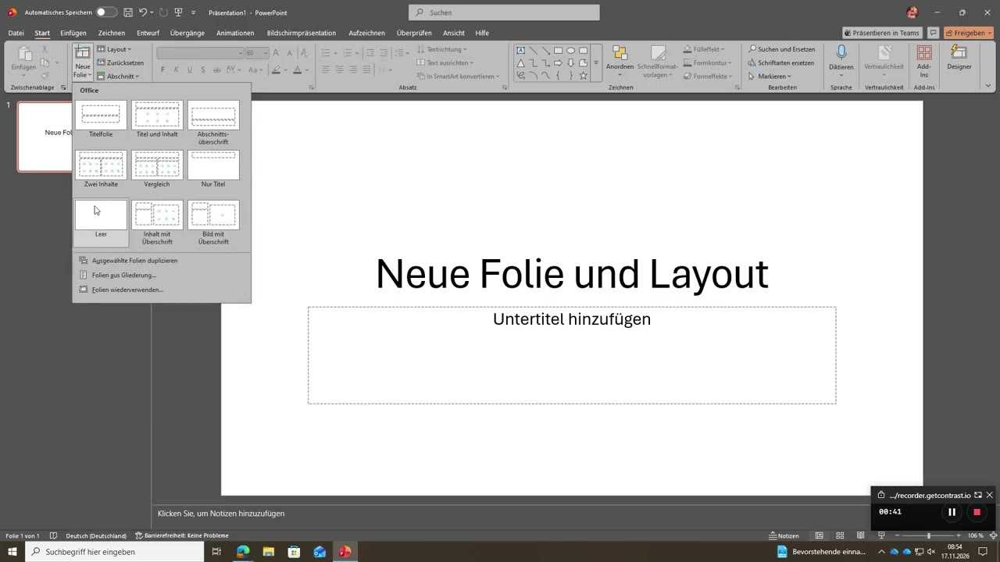
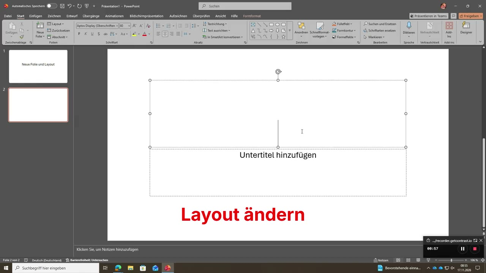

Neue Folie und Layout
Erklärvideo, 35 Sekunden, ohne Ton | |
| Bereich | PowerPoint |
|---|---|
| Programm | PowerPoint |
| Tastenkürzel | Neue Folie: Strg + M |
| System | Windows 10 und 11 |
| Dauer | etwa 2 Minuten |
| Autor | AJ |
| Fassung | v1, von der Lehrkraft ergänzt |
Eine Präsentation besteht aus Folien. Mit Neue Folie fügst du eine Folie hinzu, mit Layout bestimmst du, wie Titel, Text und Bilder auf ihr angeordnet sind.
1 Anleitung
1. Neue Folie einfügen
Klicke im Reiter Start auf Neue Folie. Schneller geht es mit dem Tastenkürzel Strg + M.

2. Ein Layout für die neue Folie wählen
Klicke auf den kleinen Pfeil unter Neue Folie. Es öffnet sich eine Auswahl mit Layouts, zum Beispiel Titelfolie oder Titel und Inhalt. Klicke auf das Layout, das du willst.


3. Die neue Folie erscheint links
Die Folie steht links in der Liste direkt unter der Folie, die vorher markiert war. Klicke sie an, um darauf zu arbeiten.


4. Layout ändern
Markiere die Folie links und klicke im Reiter Start auf Layout. Wähle ein anderes Layout aus der Liste.

5. Das neue Layout ist da
Die Folie zeigt jetzt die Felder des gewählten Layouts. Was du schon geschrieben hast, bleibt erhalten und rutscht in die neuen Felder.


2 Typische Fehler und Tipps
- Falsche Taste: Klicke mit der linken Maustaste auf die Schaltfläche im Reiter Start. Ein Rechtsklick öffnet ein anderes Menü.
- Aus Versehen Folie gelöscht? Drücke Strg + Z, dann ist sie wieder da.
- Nicht das gewünschte Layout? Das ist kein Problem. Markiere die Folie und wähle bei Layout ein anderes.